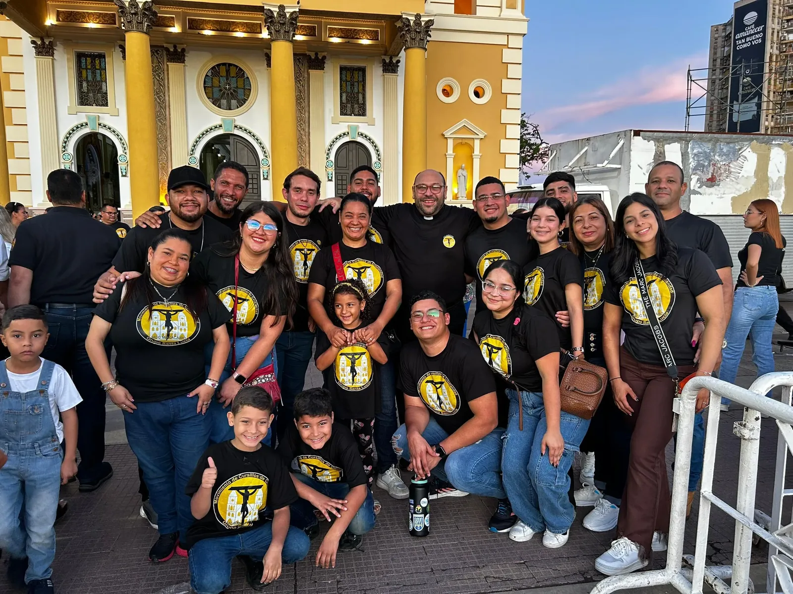
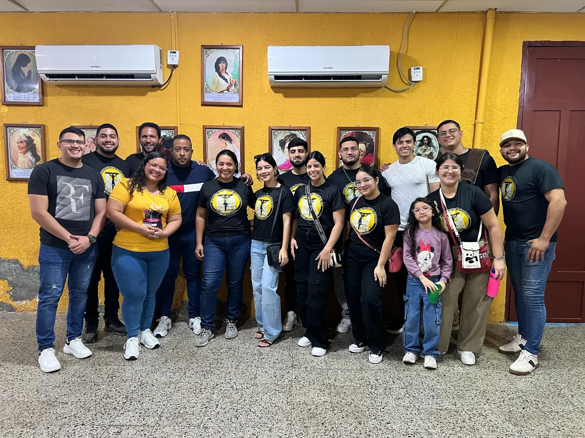
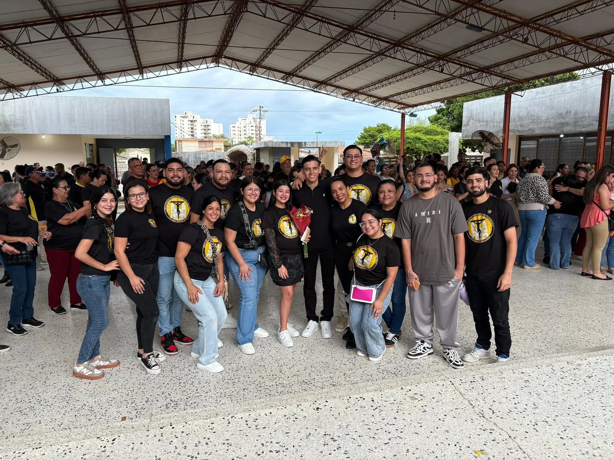
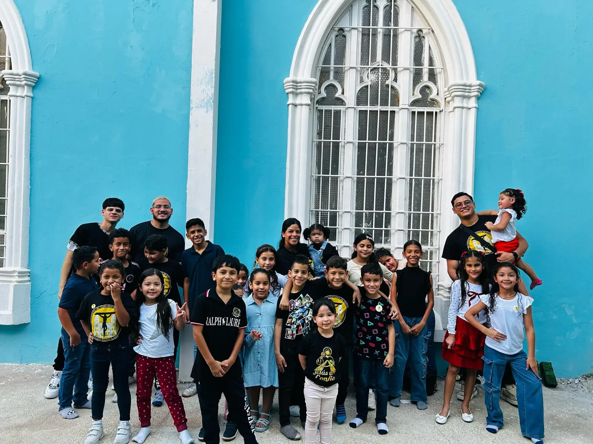

"Cristo cuenta contigo... ¡Y yo con Su gracia!"
El Movimiento de Cursillos de Cristiandad (MCC) es un movimiento eclesial que, mediante un método propio, posibilita la vivencia y la convivencia de lo fundamental cristiano.
Nuestro propósito no es crear un grupo cerrado en la parroquia, sino formar verdaderos apóstoles que, tras vivir un encuentro profundo con Cristo, salgan a "fermentar" de Evangelio sus propios ambientes: su familia, su trabajo, su vecindario y sus círculos de amigos, viviendo todo con una actitud siempre "¡De Colores!".


La etapa de búsqueda. Es el momento donde identificamos, mediante la amistad y la oración, a aquellos hermanos que tienen perfil de líderes en sus ambientes para invitarlos al retiro.

Un retiro intenso, alegre y profundo donde se vive un triple encuentro: con uno mismo, con Cristo y con los hermanos. Es el "despertar" a la gracia.

El "cuarto día" que dura toda la vida. Aseguramos la perseverancia mediante la Reunión de Grupo y la Ultreya, apoyándonos mutuamente para ser luz en el mundo.
Nuestra fe se vive en colores. La espiritualidad del Cursillo es profundamente cristocéntrica y basada en el trípode de Piedad, Estudio y Acción. Creemos en el valor de la amistad como el mejor puente para llevar a otros a Dios. No somos perfectos, pero somos perdonados, y con el poder del Espíritu Santo, sabemos que podemos transformar nuestras realidades.
Días: Sábados
Hora: 4:00 PM
* Nos reunimos en el Salón Parroquial San José para celebrar la Palabra, compartir vivencias y fortalecer nuestra amistad en Cristo.
Si estás buscando darle un sentido más profundo a tu vida y descubrir la alegría de ser cristiano, te invitamos a dar el paso.
Pedir información del próximo Cursillo →